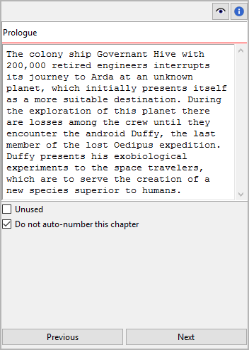

Chapter/part properties
The Chapter/part properties view opens in the right pane when you select a chapter or a part in the tree. You can edit the properties of the selected chapter or part.
Hint
You can change any chapter into a part or vice versa via the Change Level entry in the context menu, the Part menu, or the Chapter menu.

Title and description
Title and description are displayed in an editable “index card”.
The editing of the title can be completed by pressing the Enter key.
Changes to the description are applied when the mouse is clicked
anywhere outside the text input field.
Note
Depending on your Book settings, novelibre might overwrite the title the next time the tree is refreshed. Thus, you don’t need to edit the capter/part title, if auto numbering is activated and the selected chapter or part is not excluded from auto numbering (see below).
- Do not auto-number this chapter/part
If this checkbox is ticked, the selected chapter or part will be excluded from auto numbering, and the title you enter manually will persist.